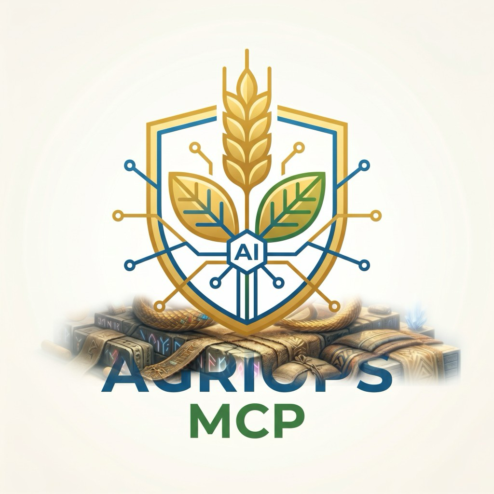

最終更新 / Last updated / Terakhir diperbarui: 2026-07-22 (v1.15.3)
このポリシーは @sugukuru/agriops-mcp サーバー（以下「本サーバー」）を対象とします。運営者は
WIN Kagoshima（以下「当社」）です。対象範囲には
README.md
に記載の公開リファレンスデプロイ（IAM保護版・匿名公開版の両方）と、改変なしでセルフホストするすべての環境を含みます。
本サーバーは、日本の公開農業データ ― 農地ポリゴン（eMAFF）、1kmメッシュ気象（Open-Meteo）、
気象庁の災害警報（JMA）、農薬登録情報（FAMIC） ― を Model Context Protocol 経由で AI エージェント
（Claude、Cursor、ChatGPT コネクタ、Google ADK など）に提供します。オプションの拡張・レガシーツール
（AGRIOPS_ENABLE_EXTENDED_TOOLS、AGRIOPS_ENABLE_LEGACY_TOOLS）は、
派生した農業計算・IoTセンサーデモ・政府統計（e-Stat）検索を追加します。全ツール一覧は
docs/api-reference.md
を参照してください。
| 種別 | 例 | 保存の有無 |
|---|---|---|
| ツール呼び出しの引数 | 座標、都道府県・作物名、圃場ID など | いいえ ― リクエスト処理のみに使用し、ディスクやDBに書き込みません。 |
| 公開農業データ | eMAFF/FAMICのスナップショット行、Open-Meteo/JMAのAPI応答 | メモリ内キャッシュのみ（TTL最大24時間、ソースによる）。個人データではありません。 |
create_staff_deploy_plan の入力 | 圃場ID、派遣期間、自由記述メモ | Elicitationフローの間だけメモリ保持（InMemoryElicitationStore）。期限切れまたはプロセス再起動で消去。ディスクには書き込みません。 |
| OAuthトークン（URL方式Elicitation, Phase 4） | 連携先プロバイダのアクセス/リフレッシュトークン | AGRIOPS_TOKEN_ENC_KEY または AGRIOPS_TOKEN_ENC_PASSPHRASE を設定した場合のみ、AES-256-GCM暗号化ファイルストアに保存（運営者管理下）。未設定時はメモリのみで再起動時に消失。トークン値はログに出力しません。 |
| 運用ログ | リクエストのメソッド/パス、ツール名、結果、レイテンシ、トレースID | 構造化JSONログ。ツール引数・秘密情報・リクエスト本文全体は含めません（tests/conformance/secret-leakage.test.tsで検証）。 |
| 監査専用ヘッダー | AGRIOPS_AGENT_ID_HEADER / AGRIOPS_AGENT_OWNER_HEADER（運営者が信頼済みゲートウェイ配下で有効化した場合） | 監査目的のみでログに記録。認可判定には使用しません。 |
在留カード・パスポート画像などの本人確認書類、チャット履歴、会話の要約、その他1回のツール呼び出しに 不要なデータは一切収集しません。詳しいセキュリティ対策は SECURITY.md を参照してください。
ツールの結果には Open-Meteo（CC-BY 4.0）、農林水産省 eMAFF、FAMIC、気象庁（JMA）、（有効化時は）e-Stat
のデータが含まれます。各ソースのライセンスと帰属表示の要件は
Data License に記載しており、対象となるすべてのツール結果に
structuredContent.attribution としてソース名を含めます。これらのデータを販売・共有・
その他の形でツール応答以外に転送することはありません。
プライバシー・セキュリティに関するお問い合わせ: info@win-g-c.com
（脆弱性報告の手順は Support ページを参照）。
本ポリシーはこのリポジトリでバージョン管理されており、変更履歴は
git log docs/privacy-policy.md で確認できます。
This policy covers the @sugukuru/agriops-mcp server (the "Server"), operated by WIN
Kagoshima ("we", "us"). Scope includes the public reference deployments described in
README.md (both the
IAM-protected and the anonymous public Cloud Run services) and any self-hosted deployment running
unmodified server code.
The Server exposes Japanese public agricultural data — farmland polygons (eMAFF), 1 km mesh
weather (Open-Meteo), JMA disaster warnings, and pesticide registrations (FAMIC) — to AI agents
(Claude, Cursor, ChatGPT connectors, Google ADK, etc.) over the Model Context Protocol. Optional
extended/legacy tools (AGRIOPS_ENABLE_EXTENDED_TOOLS, AGRIOPS_ENABLE_LEGACY_TOOLS)
add derived agronomy calculations, IoT sensor demos, and government statistics lookups. See
docs/api-reference.md
for the full tool catalog.
| Category | Examples | Persisted? |
|---|---|---|
| Tool call arguments | Coordinates, prefecture/crop names, field IDs you supply | No — used only to serve the request, not written to disk or a database. |
| Public agricultural data | eMAFF/FAMIC snapshot rows, Open-Meteo/JMA API responses | Cached in-memory only (TTL ≤ 24h depending on source). Not personal data. |
create_staff_deploy_plan draft input | Farm IDs, dispatch period, free-text notes you provide | Held in-memory for the duration of the elicitation flow only (InMemoryElicitationStore), evicted on expiry or process restart. Never written to disk. |
| OAuth tokens (URL-mode elicitation, Phase 4) | Access/refresh tokens for a connected provider | Stored only if AGRIOPS_TOKEN_ENC_KEY or AGRIOPS_TOKEN_ENC_PASSPHRASE is configured, in an AES-256-GCM encrypted file store under operator control. Without either, tokens live in-memory only and are lost on restart. We never log token values. |
| Operational logs | Request method/path, tool name, outcome, latency, trace ID | Structured JSON logs. Never include tool arguments, secrets, or full request bodies (enforced by tests/conformance/secret-leakage.test.ts). |
| Audit-only headers | AGRIOPS_AGENT_ID_HEADER / AGRIOPS_AGENT_OWNER_HEADER, if an operator enables them behind a trusted gateway | Logged for audit only; never used for authorization decisions. |
We do not collect: passport/residence-card images, other identity documents, chat history, conversation summaries, or any data beyond what a single tool call needs to answer it. See SECURITY.md for the full hardening notes.
Tool results include data from Open-Meteo (CC-BY 4.0), 農林水産省 eMAFF, FAMIC, 気象庁 (JMA), and
optionally e-Stat. Each source's license and attribution requirement is documented on the
Data License page; every applicable tool result carries
structuredContent.attribution naming the source. We do not sell, share, or otherwise
transfer this data beyond returning it in the tool response.
Privacy or security questions: info@win-g-c.com (see the Support
page for the vulnerability-reporting process). This policy is versioned in this repository; changes
are visible in git log docs/privacy-policy.md.
Kebijakan ini mencakup server @sugukuru/agriops-mcp ("Server"), yang dioperasikan oleh
WIN Kagoshima ("kami"). Cakupannya meliputi deployment referensi publik yang dijelaskan di
README.md (baik versi
yang dilindungi IAM maupun versi Cloud Run publik anonim) serta setiap deployment mandiri (self-hosted)
yang menjalankan kode server tanpa modifikasi.
Server ini menyediakan data pertanian publik Jepang — poligon lahan pertanian (eMAFF), prakiraan cuaca
grid 1 km (Open-Meteo), peringatan bencana JMA, dan data registrasi pestisida (FAMIC) — kepada
agen AI (Claude, Cursor, ChatGPT connectors, Google ADK, dll.) melalui Model Context Protocol. Alat
tambahan opsional (AGRIOPS_ENABLE_EXTENDED_TOOLS, AGRIOPS_ENABLE_LEGACY_TOOLS)
menambahkan kalkulasi agronomi turunan, demo sensor IoT, dan pencarian statistik pemerintah. Lihat
docs/api-reference.md
untuk daftar lengkap alat (tools).
| Kategori | Contoh | Disimpan? |
|---|---|---|
| Argumen pemanggilan tool | Koordinat, nama prefektur/tanaman, ID lahan yang Anda berikan | Tidak — hanya digunakan untuk melayani permintaan, tidak ditulis ke disk atau basis data. |
| Data pertanian publik | Baris snapshot eMAFF/FAMIC, respons API Open-Meteo/JMA | Hanya di-cache dalam memori (TTL maksimum 24 jam, tergantung sumber). Bukan data pribadi. |
Input draf create_staff_deploy_plan | ID lahan, periode penempatan, catatan bebas yang Anda berikan | Disimpan di memori hanya selama proses elicitation (InMemoryElicitationStore), dihapus saat kedaluwarsa atau server dimulai ulang. Tidak pernah ditulis ke disk. |
| Token OAuth (elicitation mode URL, Fase 4) | Token akses/refresh untuk provider yang terhubung | Hanya disimpan jika AGRIOPS_TOKEN_ENC_KEY atau AGRIOPS_TOKEN_ENC_PASSPHRASE dikonfigurasi, dalam penyimpanan file terenkripsi AES-256-GCM di bawah kendali operator. Tanpa itu, token hanya ada di memori dan hilang saat restart. Kami tidak pernah mencatat nilai token dalam log. |
| Log operasional | Metode/path permintaan, nama tool, hasil, latensi, trace ID | Log JSON terstruktur. Tidak pernah menyertakan argumen tool, rahasia (secrets), atau isi permintaan lengkap (dijamin oleh tests/conformance/secret-leakage.test.ts). |
| Header khusus audit | AGRIOPS_AGENT_ID_HEADER / AGRIOPS_AGENT_OWNER_HEADER, jika operator mengaktifkannya di belakang gateway tepercaya | Dicatat hanya untuk audit; tidak pernah digunakan untuk keputusan otorisasi. |
Kami tidak mengumpulkan: gambar paspor/kartu izin tinggal, dokumen identitas lain, riwayat obrolan, ringkasan percakapan, atau data apa pun di luar yang diperlukan untuk menjawab satu pemanggilan tool. Lihat SECURITY.md untuk catatan pengamanan lengkap.
Hasil tool menyertakan data dari Open-Meteo (CC-BY 4.0), 農林水産省 eMAFF, FAMIC, 気象庁 (JMA), dan
opsional e-Stat. Lisensi dan persyaratan atribusi setiap sumber didokumentasikan di halaman
Data License; setiap hasil tool yang berlaku menyertakan
structuredContent.attribution yang menyebutkan sumbernya. Kami tidak menjual, membagikan,
atau mentransfer data ini selain mengembalikannya dalam respons tool.
Pertanyaan privasi atau keamanan: info@win-g-c.com (lihat halaman
Support untuk proses pelaporan kerentanan). Kebijakan ini dikelola versinya
di repositori ini; perubahan dapat dilihat melalui git log docs/privacy-policy.md.